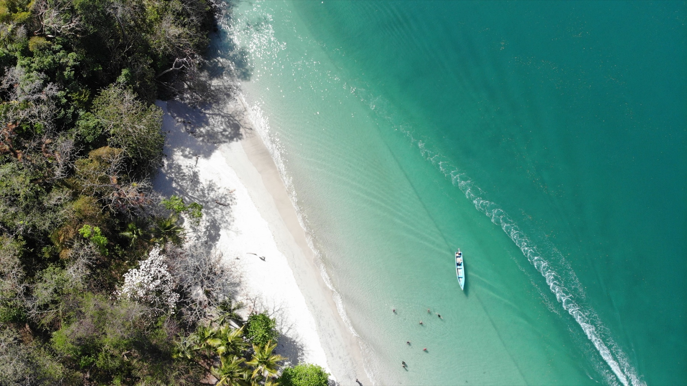
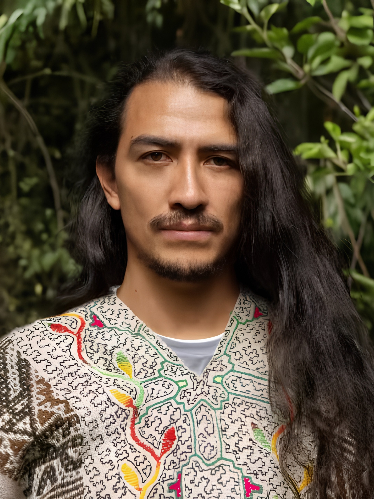
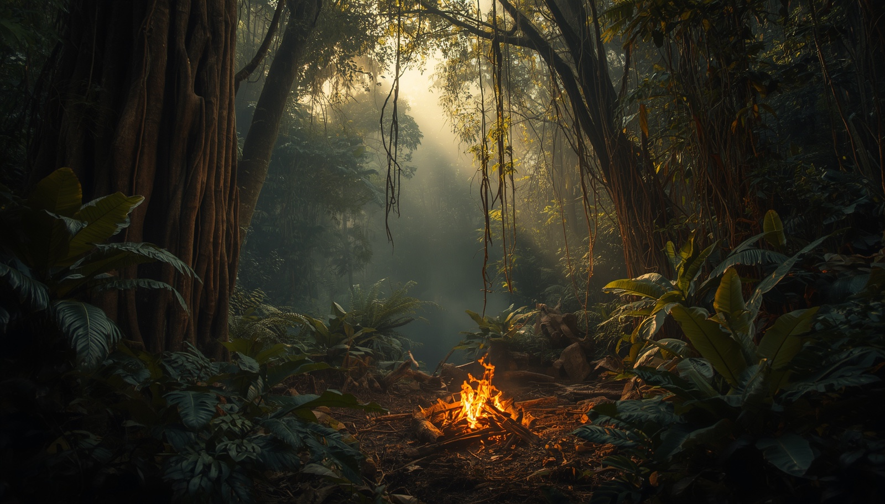

You are carrying too much
Responsibility, noise, or emotional repetition has made it difficult to hear what you actually need.
Step away from the pace and roles of everyday life for a carefully held week of preparation, ceremony, embodied practice, rest, and integration—between jungle and sea in Bocas del Toro.
Considering your first ceremony? Begin with a private conversation. You do not need to decide before your questions are answered.
You may be new to inner work, or you may have spent years exploring it. What matters is not how much language you have—it is whether you are willing to meet yourself honestly and integrate what you discover.
Responsibility, noise, or emotional repetition has made it difficult to hear what you actually need.
You understand the pattern intellectually, yet familiar choices or relationships continue to pull you back.
You are looking for a sincere experience—not spiritual theatre, pressure, or a promise of instant transformation.
You are ready to prepare, communicate openly, respect the process, and carry the work into everyday life afterward.
It is a deliberately paced week for people willing to prepare with care, enter with respect, and make space for integration.
If ayahuasca is new to you, you deserve direct information—not mystery. The first step is understanding the nature of the experience, its intensity, and whether this particular retreat is an appropriate fit.
Ayahuasca has origins in Indigenous Amazonian traditions and can significantly alter perception, emotion, and physical experience. Here, it is one element within a wider seven-day retreat—not a standalone attraction.
No ceremony can promise healing, certainty, or a particular spiritual experience. The value of the week depends on many factors, including preparation, suitability, support, personal agency, and integration.
Health history, medication, mental-health history, and other contraindications can matter. Never stop or change prescribed medication to attend. Relevant information is reviewed confidentially before acceptance.
You should understand the format, expectations, known risks, support, and final terms before deciding. An enquiry is a conversation—not admission, payment, or pressure to participate.
Tell us whether this would be your first ceremony, what draws you to the retreat, and what would help you make a grounded decision.
The retreat is designed around conditions for reflection and integration rather than promises about what you will feel or become.
Distance from daily demands can make room to notice what has been difficult to hear inside ordinary routines.
Guided reflection and shared practice invite you to recognise recurring emotional, relational, or behavioural loops.
Breathwork, yoga, sound, time in nature, and rest help bring attention back into the body and present moment.
Preparation and post-retreat guidance help translate reflection into choices and practices that belong in real life.
The exact daily schedule is shared with accepted participants. The week is intentionally shaped around preparation, supported ceremonial work, recovery, reflection, and return.
Receive preparation guidance, participation requirements, and the information needed to arrive with realistic expectations.
Orientation, shared meals, gentle embodied practice, and time to meet the group establish the rhythm of the retreat.
Three ayahuasca ceremonies sit alongside yoga, breathwork, sound-based practice, jungle exploration, circles, nourishment, and unhurried recovery time.
The final phase creates space to name what matters, consider practical next steps, and prepare for the transition back into everyday life.

This residential experience takes place in Bocas del Toro, where daily practice, rest, shared meals, and time in nature form part of the rhythm—not simply the backdrop.
The retreat includes three ayahuasca ceremonies, a cacao ceremony with Bobinsana tea rituals, a Temazcal ceremony, jungle exploration, and a healing-plant bath. These elements are held within a wider rhythm of embodied practice, nourishment, rest, and reflection.
Stephanie and Hanan hold distinct, complementary roles across preparation, ceremony, group relationship, and integration.
Founder of Rainbow Sanctuary, Stephanie supports the reflective, energy-awareness, group-field, and integration dimensions of the gathering. Her role is to help create a calm relational field in which questions, boundaries, and individual experience can be held with care.
Meet Stephanie
A Quechua lineage holder from Cusco and co-founder of Luz de Luz, Hanan brings more than ten years of work with Amazonian and Andean plant-medicine traditions, alongside ancestral music research and internal martial arts.

Time in the jungle sits alongside daily practices, rest, shared reflection, and support before and after the gathering.
This retreat is not an automatic checkout. We begin with a private conversation so you can ask questions and the team can understand your experience, intentions, and suitability.
Share what draws you to the retreat and whether this would be your first ceremony.
Ask practical questions and discuss the experience, expectations, and next steps.
Relevant health, medication, contraindication, consent, and travel information is handled through the appropriate private process.
Accepted participants receive written venue, payment, cancellation, preparation, and arrival details before committing or booking travel.
The fee is per person. The early-bird rate requires a 50% deposit before 1 September 2026. Payment is requested only after fit and participation requirements are confirmed in writing.